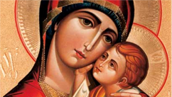

St. Mary Mother of God

The Concept of St. Mary in the Malankara Orthodox Church
Among all the saints of the Church, St. Mary occupies a preeminent position. This prominence is the consequence of her role as the Mother of God (Theotokos), a title that was underscored by the Ecumenical Council of Ephesus (A.D. 431) and firmly establishing it in the spirituality of the Church. St. Mary thus appears not only as the person who was favoured to bear the Son of God, but because of her acquiescence to God's offer, she represents the pinnacle of synergy, the process by which human beings cooperate with God for the advancement of the salvific plan. Thus, she represents the reversal of the fatal fall of Eve in the Garden of Eden, and so is also given the designation "the second Eve." The concept and role of St. Mary in the Malankara Orthodox Church can be appreciated only in the connection with its Christology and ecclesiology.
While the Holy Scriptures do not contain this information, the Church tradition names St.Mary's parents as Joachim and Anna, information contained in the Protevangelium of St.James. Her early years are shrouded in silence, except for the generalized picture that she was resident in the Jerusalem Temple. From this point the New Testament informs us that she received the annunciation of the birth of the Son of God (Lk 1: 2ff ), a point obliquely stated in St. Matthew's infancy narrative (Mt.1:20) St.Luke very succinctly suggests that many of St.Mary's experiences went past her comprehension, and it was only the passage of time that unpacked their significance for her (Lk 2:19, 50-51). Both St.Matthew and St.Luke record that she was affianced to Joseph who belonged to David's family. It is in this way that Jesus' ancestry is ultimately traced to the Davidic line. St.Matthew's narrative St.Mt 2:1ff) has King Herod making an attempt on the life of the young Jesus, occasioned by the arrival and query of the Wise Men. Operating through a divine revelation, St.Joseph takes the mother Mary and the little Jesus and flees to Egypt. A revelation in a dream at a later stage conveys the death of those who sought the life of Jesus and so St.Joseph returns with St.Mary and the child to their native country and opt to settle in Nazareth for fear of Herod's son who now controlled Judea. St.Luke alone records the event of St.Joseph and St.Mary taking the young Jesus to Jerusalem to attend the Passover and is somehow lost. After three days the parents return to find Jesus discussing with the teachers.
We do not glimpse too many occasions when St.Mary is sighted during Jesus' public ministry. There is the anecdote of how she, accompanied by other family members, attempt to obtain a meeting with him, which Jesus supposedly does not acquiesce to. St.John, however, has the narrative of Jesus, along with his disciples and St.Mary attending a marriage feast at Cana and during the course of which the wine runs out. St. Mary intercedes with her Son Jesus, the consequence of which leads to the transformation of the water held in six stone jars into the most qualitatively superlative wine. We then find references to St.Mary only during the last hours of Jesus when she is numbered among the women who watch his crucifixion. St.John has the poignant story of committing her to the care of his Beloved Disciple, an indication that by this time she had no family to look after her.
A very different picture of St.Mary emerges in the Acts of the Apostles. The post-resurrection phase presents us with a St.Mary who by now is a confirmed believer in Jesus and active in the early Christian community. And along with the Apostles and other disciples, she experiences the outpouring of the Holy Spirit on the Feast of the Pentecost (Acts 2:1-11). After this episode she fades from the accounts of the Acts of the Apostles. Her end is not narrated in the New Testament and is found only in the annals of the Church's traditions. According to the main substance of this account, all the Apostles, with the exception of St.Thomas, were summoned to St.Mary's bedside in anticipation of her death. In the blessed company of the Apostles, St.Mary breathed her last. One Church tradition has it that her body was taken up into heaven and St.Thomas managed to catch a glimpse of her as she was taken up. In proof of this encounter, St.Thomas was given the girdle and kerchief that St.Mary was using. The other disciples were astounded that the tomb where St.Mary had been interred was found to be empty. It was left to St.Thomas to end their consternation with the news of her body being taken up into Paradise, in proof of which he displayed her kerchief and girdle.
The increase in the respect and reverence to St.Mary in consequence of her developing faith, which is seen in Acts of the Apostles, is continued in the early Church. And it is on the basis of the popular devotion to her that the Second Ecumenical Council held at Ephesus in A.D. 431 declared that St.Mary be addressed as the "Mother of God" (theotokos). It must be borne in mind that St.Cyril of Alexandria's opposition to Nestorius' advocacy for the use Mother of Christ (christotokos), the controversy that consitututes the background for this ecumenical council was based not only on this popular piety, but also on the sound theological principle that what was in question was more than a mere use of a term. What was at stake was the very foundation of the belief that God had become man. In pursuing the belief that Christ was fully God and fully man, the Alexandrian Church father stressed that to address St.Mary as merely the Mother of Christ alone sundered this unitive concept.
This high reverence for St.Mary forms the underpinnings for the Orthodox Church's hymns which extol her as the Second Eve and a second heaven. Many of the hymns use the events of the Old Testament to interpret the mystery of how God could have become a human through the agency of St.Mary. For instance, a favourite event is to interpret the appearance of God to Moses in the burning bush as a type of how Christ was incarnated; just as God appeared as a fire in the bush, but the bush was not consumed, so also Christ was born of St.Mary without consuming her. And since Christ is borne by the Cherubim in heaven, so also St.Mary is figured as a second heaven because she bore the Son of God. In all these instances, what is stressed is St.Mary's obedience and submission to the will of God, thus reversing the disobedience and self-oriented character of the first Eve which paved for humankind's fall into sin.
The Orthodox Church holds it as part of its faith article that St.Mary continued to be a virgin all her life, addressing her as the Virgin Mary or the Virgin Mother. It believes that the Holy Scriptures do not contradict this belief and interprets the statements in the New Testament to the brothers and sisters of Jesus as either referring to brothers and sisters born to Joseph through a previous marriage or his cousins. Indeed, the New Testament could be seen as very supportive of affirming the continued virginity of St.Mary. When Joseph and Mary go up to Jerusalem and inadvertently leave Jesus behind in the Temple, there is no mention in the gospel to any of his siblings who accompanied them. And in the Gospel of St.John, Jeus hands over charge of his mother Mary to his Beloved Disciple, a situation which would have been unwarranted if Jesus had other brothers or sisters.
However, it must be also stated that in the devotion of the Orthodox Church to St.Mary no role or description is made other than her being the Mother of God. In the iconographic tradition of the Church, St.Mary is usually presented as holding in her arms the child Jesus. Similarly, in the hymns which focus on St. Mary, she is asked to intercede to her Son, affirming the biblical principle that there is only one Mediator between God the Father and humankind. In fact, constant stress of the Church is on the fact that there is only one person, Jesus Christ, who has been exempt from the taint of humankind's sin. It can, therefore, be inferred that the Orthodox Church does not believe that St.Mary was immaculately conceived or that she has a special mediatory role alongside Jesus Christ in the salvation of humankind.
In thus developing a devotion to St.Mary the Orthodox Church extols her who exemplifies what it means to be transformed into the image and likeness of Jesus Christ. No doubt St.Mary symbolizes what it means to find favour with God. And in so praising her, the Church recognizes that it fulfills St.Mary's prediction given in the Magnificat:
"For, behold, henceforth all generations will call me blessed " (Lk 1:48).